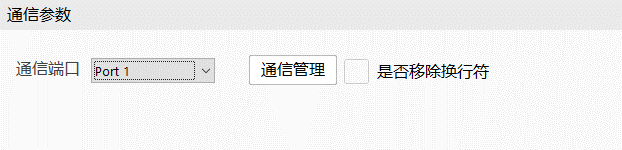
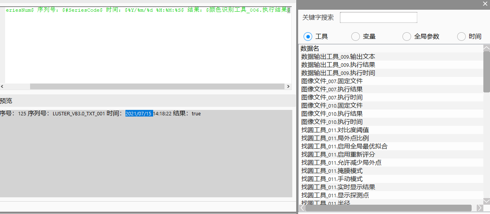

数据输出工具的主要功能是对不同类型和来源的数据灵活地进行字符串转化，生成的字符串可以输出给其他工具，也可以写入TXT、输出到消息窗口、通信发送。另外，数据输出工具还可以用来保存图像及截图。
数据输出工具的应用场景主要分为两个：一是字符串格式化并输出，二是图像保存。
字符串格式化并输出。之前关于字符串相关操作过于复杂，如通信、消息报告、写日志、通信发送等，需要数据打包工具对数据进行打包，然后通过格式化工具进行格式化，拿到格式化结果后才能继续工作。过程繁琐，流程图复杂且冗余，尤其是在多个分支时：
通过数据输出工具实现操作上的简化，只需添加一个数据输出工具即可完成。
图像保存功能。之前当需要保存不同图像采集工具的图像或同时保存图像及截图时，不得不新建多个图像保存工具或屏幕截图工具才能实现。数据输出工具的图像保存功能，支持多幅图像同时进行保存，同时支持原图和截图同时保存。
文本输出是将字符串引用的工具参数及变量插入到文本编辑框中，通过对文本的解析，生成格式化字符串，然后进行输出。图像保存是将要保存的图像数据或视图插入到保存列表中，然后一次性进行图像存储。

输出选择
输出选择可选仅格式化、日志、消息报告、通信和图像保存。选择仅格式化，工具将仅起到格式化字符串的作用，生成的字符串输出给其他工具使用；选择日志，工具生成的字符串可以写到日志文件中；选择消息报告，工具生成的字符串将输出到消息窗口；选择通信，工具将作为发送端将生成的字符串发送给通信接收端，只支持无协议通信；选择图像保存，工具将用来进行图像保存，支持原图保存和截图保存。
启用多情境功能
情境是可单独设置执行条件和输出内容的分支，启用多情境，即可以添加多个分支，每个分支可以单独设置执行条件；这样将多分支集成到了工具内部。当多个情境都满足执行条件时，第一个执行的情境的输出结果作为数据输出工具的输出。
执行
手动执行数据输出工具。
设置
设置数据输出工具的通用参数，包括小数的保留位数和整数的宽度。
添加
在启用多情境功能时，添加情境。
删除
用来删除当前情境。
条件控制
执行，该情境总是会执行；
不执行，该情境不会被执行；
表达式，通过表达式来控制该情境是否会执行。
文本编辑
编辑要输出的内容，可以通过数据插入窗口插入一些数据，编辑的文本最终会被解析生成字符串。
预览
实时显示文本编辑的内容的解析结果。
输出选择不同，窗口会显示不同的参数。选择仅格式化时，无参数。当输出选择为日志时，参数窗口如下：

文件路径，设置日志文件的生成路径；
文本名称，设置日志文件的名称；
是否覆盖，是否覆盖之前生成的同名文件。不选中时输出的内容添加到已存在文件的后面。
当输出选择为消息报告时，参数窗口如下：
报告类型，设值消息报告的类型，包括提示、警告、错误、致命错误、弹出提示、选项提示和自定义提示；
禁用弹窗，设置消息提示时，是否禁止弹窗。
当输出选择为通信时，参数窗口如下：

通信端口，设置用来数据发送的端口，仅支持无协议的端口。
通信管理，点击通信管理按钮，将弹出通信管理对话框。

双击数据列表中的数据项，对应的数据将被插入到编辑框内。
关键字搜索
通过编辑文本框的关键字，来过滤数据列表中显示的数据项。
工具
选择工具后，列表中将显示工具相关参数。
变量
选择变量后，变量将显示到列表中。
全局参数
选择全局参数后，所有全局参数将被显示到列表中。

输出选择为图像保存时，执行控制与情景管理部分，与数据输出工具的其他功能相同。
下拉列表可以选择原图保存或截图保存，只有列表为空时才可以切换选择，目的是防止同一情景下原图保存和截图保存数据混合。
原图保存时，当点击增加按钮时，弹出原图数据编辑窗口，如下图。

截图保存时，点击增加按钮时，弹出截图数据编辑窗口，如下图。

删除
当列表中有一条或多条数据被选中时，删除按钮可用。点击删除按钮后，选中的数据会被删除。
修改
当列表中仅有一条数据被选中时，修改按钮可用。点击修改按钮，弹出数据编辑窗口，如果是原图保存数据，弹出原图保存数据编辑窗口，如果是截图保存数据，弹出截图数据编辑窗口。
数据名
数据参数名，图像类型的数据，支持灰度图像、RGB图像、深度图像和轮廓图像的保存，当鼠标切入编辑框时，将自动显示图像数据插入窗口，如下图。双击列表中的数据，对应的数据名将被插入到数据名编辑框内。双击其他选项，之前编辑框内的数据将被覆盖。

截屏窗口
选择要截屏的窗口，比如View-1。
自动命名
是否使用系统给文件的命名，不选中的话，就需要在编辑框中编辑文件名，编辑框支持数据插入窗口插入文本。选中时，数据列表中文件名显示为自动命名。
文件路径
设置保存图像的路径。在系统路径下。
文件格式
原图保存可选择自动、BMP、JPG、RDB、FDB、PNG；JPG需要设置压缩比例和质量，默认为BMP；截图保存可选自动、BMP、JPG，默认为BMP。
压缩比例
仅文件格式为JPG时可用，其他格式时界面隐藏，设置图片压缩比例，只支持1、2、4、8，其他数据无效，默认值为1。
压缩质量
仅文件格式为JPG时可用，其他格式时界面隐藏，设置图片的压缩质量，取值为1~100，默认值为80。
缩放比例
屏幕的缩放比例，取值范围0.001~1.00，默认值为0.25。
添加水印
是否添加水印，不选中时，水印模式和水印信息不可编辑。选中时，继续选择水印模式。
水印模式
水印模式有三种，Product，Vendor和Product and Vendor，选择其中一种模式并编辑水印信息。
产品水印
水印模式为Product或Product and Vendor时，可编辑，选择想要的水印信息。
供应商水印
水印模式为Vendor或Product and Vendor时，可编辑，选择想要的水印信息。
覆盖保存
自动命名不选中文件名参数不为空时，是否覆盖同名文件保存。自动命名时禁用。
| 现象描述 | 解决方法 |
|---|---|
| 工具执行报输出选择为空 | 在工程中右键选中，点击属性，在弹出的初始化窗口中选择输出 |
| 工具输出的字符串为空，高级属性界面预览内容也为空 | 所引用的参数或变量值可能为空，查一下参数或变量的值 |
| 工具输出的字符串为乱码 | 查看预览窗口，若预览窗口也是乱码，则编辑框输入字符串格式存在问题，可删除乱码对应的数据重新编辑 |
| 当选择为通信发送时，报发送失败 | 查看通信连接状态及端口状态是否正常，若连接状态或端口状态异常，先解决连接问题 |
| 当启用多情境时，报所有情境都未执行 | 查看各个情境的执行条件，是否都是false，若都未false，修改执行条件，否则工具处于无效状态 |
| 当数据输出工具保存图像时，保存图像失败 | 查看图像列表中所插入的图像数据是否正常 |
无
| 参数名称 | 参数说明 |
|---|---|
| 执行结果 | 工具执行结果。 |
| 执行时间 | 工具执行时间。 |
| 输出文本 | 输出格式化后的字符串。 |
| 原图保存路径1~16 | 数据链依次输出原图的保存路径，注意只输出第一个执行的原图保存的情境的图像路径，且只输出实际保存图像的路径，如情境1执行时只保存的5幅图像，那么原图保存路径6至原图保存路径16都为空。 |
| 截图保存路径1~16 | 数据链依次输出截图的保存路径，注意只输出第一个执行的截图保存的情境的图像路径，且只输出实际保存图像的路径，如情境1执行只保存的1幅截图图像，那么截图保存路径2至截图保存路径16都为空。 |
参见“\Samples\数据输出工具.gvp”。